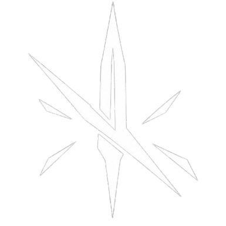
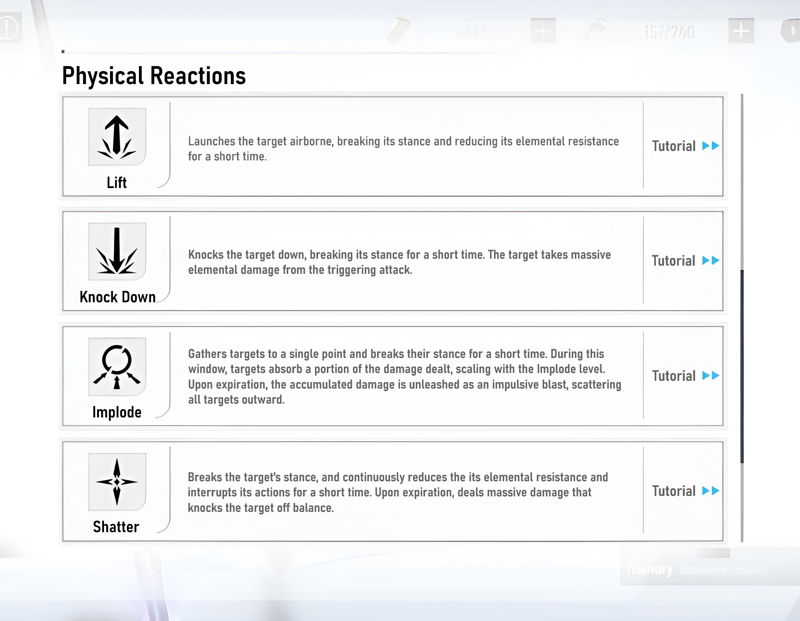

DESIGN PHILOSOPHY
This concept introduces a structural combat expansion for Punishing: Gray Raven, establishing a new combat ecosystem to take place in the game.
To ensure lasting, long-term viability and avoid disturbing existing systems, this combat ecosystem is designed to accomplish the following:
- Features a distinct character category to specialize in it.
- Introduces its own dedicated team compositions, while also having a distinct purpose to be used in standard compositions under some cases.
- Introduces dedicated game modes and environmental modifiers to ensure system relevance.
- Remains completely effective in standard content outside specialized modes.
- Avoids being a niche, gimmick system or a duplicate of existing mechanics.
The new system is built around Physical Reactions, stance break and executions, independently from Affixes and elements while ensuring its category of characters remains completely relevant to these systems. By re-engineering Uniframes as the core character category for Physical Reactions, this design honors their unique identity—centered on parries and executions.
I figured Uniframes require more than just “being active”, they need to be assigned to an existing, active role, with available environments, and be granted a valid purpose outside of dedicated purposes; their unique mechanics need to be more character-based than enemy-based (Finisher Gauge) to activate. These mechanics should also be designed to be a part of their combat identity, while ensuring they have their dedicated combat environments where they achieve full potential—so their mechanics don’t feel extra, and players don’t feel like they are forced to pull for them.
The Physical Reactions combat ecosystem is inspired by modern gacha games, ensuring that the system feels natural and familiar to PGR. The design also ensures seamless adaption to PGR’s core combat framework centered around fast rotations, orb pings, and team synergy.
PHYSICAL REACTIONS SPECIFICATIONS
New Uniframes can apply Physical Inflictions (PIs) and trigger Physical Reactions (PRs) through their Core skills, while significantly increasing effectiveness via assigned specialty.
MECHANICS
- PI Stacking: Certain character-specific attacks apply one PI stack, up to a maximum of four. The number of PI stacks determines the PR level.
- PI Consumption: Certain character-specific attacks consume the target’s available PI stacks to cast the assigned PI-based PR (at least one PI stack is required to cast). PR level = the number of inflicted PI stacks.
- Execution: Attacks during an active PI-based PR build [Execution] based on damage dealt. [Execution] has five increments, each representing 20% progress. This status cannot be inherited from defeated targets by other targets.
This proposal introduces two PI-based PRs [Lift / Knock Down] and one Execution-based PR [Execute]. Each Uniframe has 1 assigned PI-based PR, and all Uniframes have Execute PR assigned universally.
Lift
- Effect: The target is launched airborne and their Super Armor breaks for 5 seconds. During this window, the target takes increased elemental damage matching the character's element.
- Restriction: PIs cannot be inflicted while a target is Lifted, and their Super Armor recovers upon expiration.
 Knock Down
Knock Down
- Effect: The target is knocked down and their Super Armor breaks for 5 seconds. The enemy takes massive elemental burst DMG matching the character’s element from the triggering attack.
- Restriction: PIs cannot be inflicted while a target is Knocked Down, and their Super Armor recovers upon expiration.

Execute- Effect: Upon reaching 100% Execution progress (5 increments), the character's next Basic Attack triggers their Finishing Move.
- Constraint: When a PI-based PR ends, that target enters a 5-second cooldown before PIs can be applied to it again.

KITS OVERVIEW & CLASSES
SPECIALTY
For a Uniframe team to be competitive, it requires each member to have a unique specialty of the three proposed specialties. Each released character occupies only its assigned specialty. Related skills are unlocked through the Modernized Uniframe skills.
- Inflictor: Applies PIs more efficiently.
- Caster: Casts PRs more often and deals more damage during an active PR.
- Executioner: Improves PRs effectiveness and execution efficiency.
MODERNIZED UNIFRAME SKILLS
The updated design of Uniframe Skills that adapts directly to the PR framework, no longer affecting the Finisher Gauge.


SKILL 1 – PHYSICAL INTERACTION
Unlocks specialty-specific kits associated with the character’s Core Skills.
- Inflictor: Certain attacks apply PIs to the target.
- Caster: Certain attacks deal increased damage during an active PR.
- Executioner: Executioner QTE during an active PR directly adds one Execution increment.


SKILL 2 – SPEED ATTACK
Triggered by holding Dodge while evading an incoming attack. 10s cooldown. Retains the 5s effect of Super Armor break.
UI note: A flashing Dodge button indicates that Speed Attack is available.
Matrix Speed Attack: Upon triggering Matrix, Speed Attack cooldown is bypassed and the attack becomes Matrix Speed Attack, which can trigger by simply holding the Dodge button while the target is frozen due to Matrix’s effect, can trigger only once during this state. It also triggers a bonus effect based on the character’s specialty:
- Inflictor: Applies a PI to the target.
- Caster: Casts a PR if the target has at least one PI.
- Executioner: Directly adds one Execution increment.


SKILL 3 – FINISHING MOVE
Retains the original kit design. Can trigger by tapping Basic Attack when the target has Execute PR.
For new Uniframes, Finishing Move will trigger Time Lag Calculation.


SKILLS 4 & 5 – ENHANCED [SPEED ATTACK & FINISHING MOVE]
Retain the original kit design.
SKILL 6 – ENHANCED TEAM
Requires at least three Uniframes to activate. Its purpose is to improve PRs and team rotation effectiveness.
- Inflictor: Instantly resets standby character cooldowns when a level-4 PI target is present.
- Caster: Triggers standby characters’ QTE upon casting a PR.
- Executioner: When a level-4 PR is cast by self or team members, triggers the PI-based PR effects of the other team members at 30% effectiveness (does not trigger their animations).


AFFIXES
By having 3 coexisting systems, elements, Affixes and Physical Reactions, I believe Uniframe do not necessarily require access to Affixes.
There are two separate options concerning this part, the developers can determine which is more feasible:
- Option 1 – PR-based Affix behavior:
Uniframes do not contribute to Affix resource accumulation. When the assigned Affix is active and a Uniframe is on the field, PR effects will interact with the character’s Affix instead of its element. - Option 2 – Complete Affix exclusivity to Omniframes:
The Affix framework will remain completely exclusive to Omniframes, while PRs will be Uniframes’ exclusive framework.
UNIFRAME CLASSES & SPECIALTY DISTRIBUTION
Two new Uniframe classes are introduced. The way they are designed ensures they remain completely relevant to regular combat, and achieve more effectiveness in Uniframe combat. The following descriptions outline each Uniframe class’s purpose, kit design, and available specialties (developers will assign only 1 specialty to each released character).

Vanguard [Inflictor / Caster]:
- Retains the original class skill and kit design.

Terminator [Inflictor / Caster]:- In-Game Description: Focused on overcoming, can deal sever damage to enemies with high durability.
- Class Skill (Max Level): For every 2× increase in the enemy’s Max HP relative to the Terminator’s Max HP, grants +5% Extra DMG Bonus, up to +40%.
- Class Skill Demonstration: The Extra DMG Bonus scales with the enemy’s Max HP as follows:
Enemy Max HP = 100% × 2¹ (200%) Character Max HP → Grants +5% Extra DMG Bonus
100% × 2² (400%) → +10%
100% × 2³ (800%) → +15%
...
100% × 2⁷ (12,800%) → +35%
100% × 2⁸ (25,600%) → Grants +40% Extra DMG Bonus (MAX)- In multi-target encounters, the enemy with the highest Max HP determines the Extra DMG Bonus for the encounter.
- Kit Design: The Terminator’s primary skills, such as Signature Moves, QTEs, and some Core Skills, deal damage based on the target’s Max HP, which is increased by the granted Extra DMG Bonus.
Terminator’s HP stat will be lower than the average value, while its defense stat will be higher.


Arbiter [Inflictor / Executioner]:- In-Game Description: Focused on staggering, can exploit enemy weaknesses during vulnerability windows.
- Class Skill (Max Level): Reduces the target’s Extra DMG Reduction by 20% while its Super Armor is broken.
- Class Skill Demonstration: When a target’s Super Armor is broken by the Arbiter or team members, the target’s Extra DMG Reduction is reduced by 20%. The effect expires when the target’s Super Armor is restored.
- Note that the way this skill is designed will make it activate in sync with PRs.
- Kit Design: Some of the Arbiter’s skills can deplete Super Armor Gauge faster, improving its effectiveness in ordinary combat.

LEGACY UNIFRAMES
Developers must “technically” undo the Uniframe overhaul introduced in Reveries With a Whale patch, which involved the new Uniframe mechanics and Finisher Gauge, by removing Finisher Gauge from all associated content alongside Uniframe skills, that’s in order to completely retire this niche system from PGR and ensure the PR framework does not conflict with the old system.
As a player, I see 2 sensible options following this cleanup:
- Freeze and provide player-based compensation: Compensate each player based on how much they have invested in their Uniframes, leaving these units completely lacking Uniframe skills.
- Rework Uniframe skills: Hide each unit’s Uniframe skills, or hide Uniframe Crystals from the shop until they have received a rework (to prevent cases where an unknowing player invests in under-rework skills). Then across separate, scattered patches, release the updated skills for 1 or 2 units (or whatever is feasible).
I believe option 2 is the most recommended for the following reasons:
- The base design & damage parameters for most skills are preserved, with changes being done to the trigger conditions to be PR-based instead of Finisher-Gauge-based.
- Uniframe skills by design are completely separate from the character’s main kit.
- The task is nothing new, Leap Skills for Omniframes are a very close reference.
- Players who have already invested in these units don’t simply lose progress and get to enjoy them.
- Developers would be able to expand the system more efficiently via existing units, instead of waiting until enough new units are released.
- The older Uniframes finally become worthwhile to pull, and mainly a broken system would be finally fixed.
Further clarification: The units’ main kits will remain untouched. Also, “viability” does not mean “competitiveness” or “buff”—in ordinary combat stages, these units remain older, power-crept units. It means complete effectiveness in PR-dedicated combat and relevance in ordinary combat stages, finally making Uniframe mechanics viable across all content.
ENEMY BEHAVIOR
- New Normal and Elite Enemies: Ensure new enemies have animations that interact with Physical Reactions.
- Existing standard bosses: Take effect from PI-based PRs (Lift and Knock Down), but not Execution-based PRs (Execute).
- New boss category: Introduce a new boss category with dedicated Physical Reaction animations (use the existing Boss-Uniframe category).
- This category of bosses uses different execution behavior; they take massive damage from Finishing Moves instead of fatal damage.
- if Execute is nonfatal, it expires after usage, Execution progress resets to 0%, and the boss immediately regains its Super Armor.
UNIFRAME ROLES & ENDGAME CONTENT
NON-UNIFRAME CONTENT
- Terminator: Could theoretically outperform the main Omniframe DPS in advanced elemental PPC stages such as Intensive Battle, or seasonal events involving high-durability enemies.
- Vanguard: Technically functions as a 10-seconds Attacker.
- Arbiter: Reduces enemy Extra DMG Reduction while their Super Armor is broken.
UNIFRAME CONTENT
- Terminator & Vanguard: DPS / Sub-DPS and Inflictor / Caster.
- Arbiter: Support and Inflictor / Executioner.
ENDGAME CONTENT
- Warzone: Introduce stage modifiers that reduces enemies’ elemental damage resistance while affected by PRs.
- Phantom Pain Cage: Introduce stages featuring the new boss category and PR-based elemental modifiers.
- Introduce new Uniframe game modes: Feature enemies that are primarily defeated through Physical Reactions and executions.
- Introduce new game where Uniframes are prior without necessarily relying on PRs: This is important as to give Uniframes a natural identity based on their main kits and identity, while Omniframes already dominate the existing content.
- Such game modes could feature:
- Solo combat.
- High-durability enemies.
- Stubborn, aggressive enemies (continuously attacking, balance disturbing attacks, with high Super Armor Gauge).
BANNER SPECIFICATIONS
- Uniframe banner and acquisition methods would receive necessary changes to ensure revenue and ensure Uniframes don’t turn into cheaper Omniframes.
- Introduce exclusive pull tickets to prevent player confusion.
CONCEPTUAL COMBAT VIDEO
CONCEPT NOTE: Qu: Shurka is used in this video solely to demonstrate the performance of Arbiter class with Executioner specialty.
I have used her specifically because her Will Bearer core skill functions very similarly to Speed Attacks.

EXTRA:
- Introduce more Physical Reactions in the future to further expand this ecosystem.
- Some Bosses being released as Uniframes would provide an enjoyable experience, as their unique attacks during their boss fight stages could be released as PRs, Speed Attacks and Finishing Moves.
CONCEPTUAL UNIFRAME NPC AND BOSS FILES